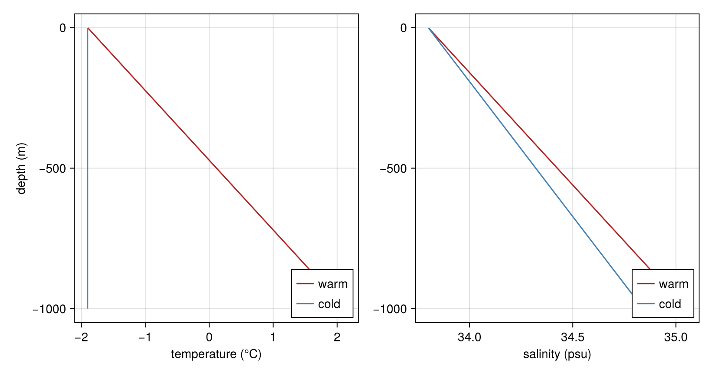
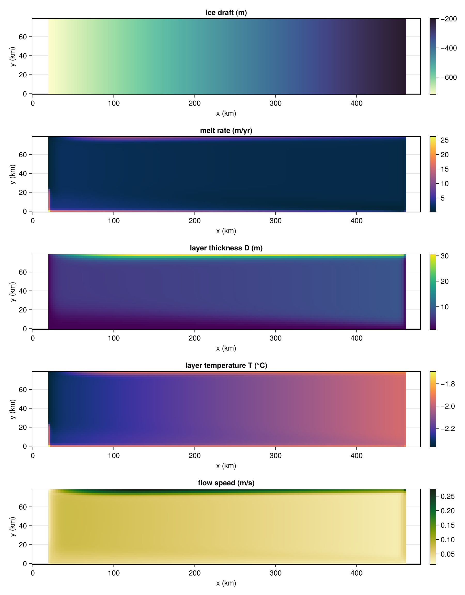
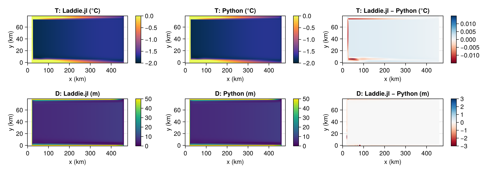
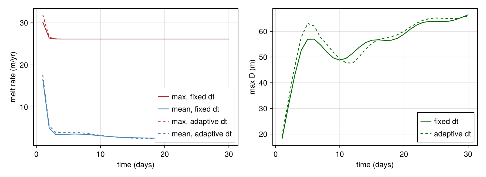
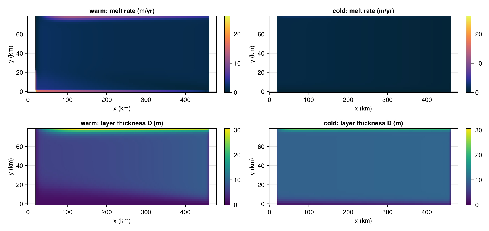
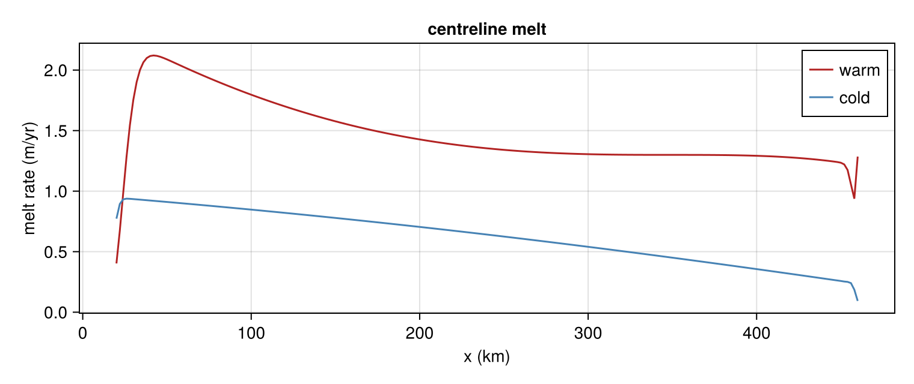

ISOMIP+ channel cavity
The idealised ISOMIP+ cavity (Asay-Davis et al., 2016): an 80 km-wide channel, 240 × 40 cells at 2 km, with an ice draft that deepens from the ice front (east) to the grounding line (west). build_isomip sets it up with these defaults:
| symbol | value | meaning |
|---|---|---|
| $\Delta t$ | 210 s | time step |
| $\nu$ | 0.8 | Robert–Asselin filter strength |
| $f$ | $-1.37\times10^{-4}$ s⁻¹ | Coriolis parameter |
| $C_d$, $C_d^{\text{top}}$ | $2.5\times10^{-3}$, $1.1\times10^{-3}$ | drag coefficients |
| $A_h$, $K_h$ | 6, 1 m² s⁻¹ | viscosity, diffusivity |
| $\gamma_T$ | $1.8\times10^{-4}$ | turbulent heat exchange (fixed) |
| $\mu$ | 2.5 | entrainment parameter |
| $D_\min$ | 1 m | minimum layer thickness |
| wall slip | 2 (no slip) | grounding line and land |
This page walks through the forcing, a warm run, the validation against the Python LADDIE code, the spin-up, and the contrast between the warm and cold cavities.
using Laddie
using NCDatasets
using CairoMakie
CairoMakie.activate!(type = "png")
sim_w = build_isomip(; isomipcond = :warm)
sim_c = build_isomip(; isomipcond = :cold)
mw, mc = sim_w.model, sim_c.model
# Plot helpers: interior cells, NaN off the shelf, axes in km.
peryr(m, A) = A .* m.seconds_per_year
shelf(m, A) = ifelse.(m.tmask .> 0, A, NaN)[2:end-1, 2:end-1]
x_km(m) = (0:m.nx-1) .* (m.dx / 1e3)
y_km(m) = (0:m.ny-1) .* (m.dy / 1e3)
function mapplot!(fig, i, j, m, A, title; kw...)
ax = Axis(fig[i, 2j-1]; title, xlabel = "x (km)", ylabel = "y (km)")
Colorbar(fig[i, 2j], heatmap!(ax, x_km(m), y_km(m), A; kw...))
endForcing
The cavity is driven by a prescribed ocean profile, which LADDIE samples at the base of the layer (z_b − D) to get the ambient temperature and salinity. ISOMIP+ defines two end-members, both linear in depth down to 720 m: a warm cavity reaching about +1 °C at depth, and a cold one near the freezing point throughout.
sel = mw.z .>= -1000
fig = Figure(size = (820, 430))
for (j, (v, label)) in enumerate(((:Tz, "temperature (°C)"), (:Sz, "salinity (psu)")))
ax = Axis(fig[1, j]; xlabel = label, ylabel = j == 1 ? "depth (m)" : "")
lines!(ax, getproperty(mw, v)[sel], mw.z[sel]; color = :firebrick, label = "warm")
lines!(ax, getproperty(mc, v)[sel], mc.z[sel]; color = :steelblue, label = "cold")
axislegend(ax; position = :rb)
end
fig
Warm run
Three days from rest. The meltwater rises along the draft towards the ice front, and Coriolis turns it into boundary currents along the side walls; melt is strongest there and in the deep grounding-line corner.
run!(sim_w; days = 3.0, verbose = false)
speed = sqrt.(Laddie.im_half(mw.U.present) .^ 2 .+ Laddie.jm_half(mw.V.present) .^ 2)
fig = Figure(size = (900, 1150))
mapplot!(fig, 1, 1, mw, shelf(mw, mw.z_draft), "ice draft (m)"; colormap = :deep)
mapplot!(fig, 2, 1, mw, shelf(mw, peryr(mw, mw.melt)), "melt rate (m/yr)"; colormap = :thermal)
mapplot!(fig, 3, 1, mw, shelf(mw, mw.D.present), "layer thickness D (m)"; colormap = :viridis)
mapplot!(fig, 4, 1, mw, shelf(mw, mw.T.present), "layer temperature T (°C)"; colormap = :thermal)
mapplot!(fig, 5, 1, mw, shelf(mw, speed), "flow speed (m/s)"; colormap = :speed)
fig
max_melt, mean_melt, max_speed = meltstats(mw)
println("mean melt $(round(mean_melt; digits = 2)) m/yr, max melt $(round(max_melt; digits = 2)) m/yr, max speed $(round(max_speed; digits = 3)) m/s")mean melt 1.96 m/yr, max melt 26.16 m/yr, max speed 0.275 m/sValidation against the Python code
The same warm configuration, run for one day by the original Python LADDIE (runladdie.py config_isomip_compare.toml, geometry from gen_isomip_geom.py), is stored in docs/assets/restart_000001.nc. Laddie.jl repeats the day with the Python ice-base slope (PyGradient) and the Python wall condition (one partial-slip factor of 1 on every wall), and the two end states are compared cell by cell.
v1_walls = BoundaryConditions(; grounding_line = PartialSlipGL(1.0), land = PartialSlipLand(1.0))
sim_py = build_isomip(; isomipcond = :warm, gradient = PyGradient(), boundary = v1_walls)
run!(sim_py; days = 1.0, verbose = false)
mj = sim_py.model
ds = Dataset(joinpath(pkgdir(Laddie), "docs", "assets", "restart_000001.nc"))
py = Dict(v => coalesce.(ds[v][:, :, 2], 0.0) for v in ("D", "T", "S", "U", "V")) # level 2 = present
close(ds)
jl = Dict(v => getproperty(mj, Symbol(v)).present[2:end-1, 2:end-1] for v in keys(py))
on = mj.tmask[2:end-1, 2:end-1] .> 0
for v in ("D", "T", "S", "U", "V")
d = abs.(jl[v][on] .- py[v][on])
println(rpad(v, 2), " mean |Δ| = ", round(sum(d) / length(d); sigdigits = 2),
" (", round(100 * sum(d) / sum(abs, jl[v][on]); sigdigits = 2), " % of mean |value|)")
endD mean |Δ| = 0.02 (0.16 % of mean |value|)
T mean |Δ| = 0.0016 (0.098 % of mean |value|)
S mean |Δ| = 0.00058 (0.0017 % of mean |value|)
U mean |Δ| = 0.00012 (0.16 % of mean |value|)
V mean |Δ| = 9.9e-5 (0.16 % of mean |value|)The residuals are floating-point noise (different evaluation order in NumPy and Julia), far below anything visible in the maps. The Python log reports a mean melt of 24.42 m/yr and a max of 141 m/yr at the end of the day.
max_melt, mean_melt, _ = meltstats(mj)
println("Laddie.jl: mean melt $(round(mean_melt; digits = 2)) m/yr, max $(round(max_melt; digits = 1)) m/yr")Laddie.jl: mean melt 24.42 m/yr, max 140.7 m/yrmasked(A) = ifelse.(on, A, NaN)
fig = Figure(size = (1100, 390))
for (i, (v, unit, crange, drange, cmap)) in enumerate((("T", "°C", (-2, 0), 0.015, :thermal),
("D", "m", (0, 50), 3.0, :viridis)))
mapplot!(fig, i, 1, mj, masked(jl[v]), "$v: Laddie.jl ($unit)"; colormap = cmap, colorrange = crange)
mapplot!(fig, i, 2, mj, masked(py[v]), "$v: Python ($unit)"; colormap = cmap, colorrange = crange)
mapplot!(fig, i, 3, mj, masked(jl[v] .- py[v]), "$v: Laddie.jl − Python ($unit)";
colormap = :RdBu, colorrange = (-drange, drange))
end
fig
Spin-up
How long until the cavity settles? A coarser grid (80 × 20) keeps this quick. run! continues from the current state and clock, so the run advances one day at a time and records the melt after each. The same loop runs with AdaptiveDt, which picks dt to hold a target CFL number instead of using a fixed step.
ndays = 30
spinup = Dict(
"fixed dt" => build_isomip(; isomipcond = :warm, nx = 80, ny = 20),
"adaptive dt" => build_isomip(; isomipcond = :warm, nx = 80, ny = 20, tstep = AdaptiveDt()),
)
series = Dict(k => zeros(ndays, 3) for k in keys(spinup)) # mean melt, max melt, max D
for (k, sim) in spinup, d in 1:ndays
run!(sim; days = 1.0, verbose = false)
mx, mn, _ = meltstats(sim)
series[k][d, :] .= (mn, mx, maximum(sim.model.D.present .* sim.model.tmask))
end
fig = Figure(size = (900, 330))
ax1 = Axis(fig[1, 1]; xlabel = "time (days)", ylabel = "melt rate (m/yr)")
ax2 = Axis(fig[1, 2]; xlabel = "time (days)", ylabel = "max D (m)")
for (k, style) in (("fixed dt", :solid), ("adaptive dt", :dash))
s = series[k]
lines!(ax1, 1:ndays, s[:, 2]; color = :firebrick, linestyle = style, label = "max, $k")
lines!(ax1, 1:ndays, s[:, 1]; color = :steelblue, linestyle = style, label = "mean, $k")
lines!(ax2, 1:ndays, s[:, 3]; color = :darkgreen, linestyle = style, label = k)
end
axislegend(ax1; position = :rb)
axislegend(ax2; position = :rb)
fig
Melt spikes while the layer adjusts from its initial state and settles within a few days; the maximum thickness keeps growing slowly over the month. The adaptive run reaches the same melt with a larger final dt and fewer steps (see also benchmark/adaptive_dt.jl).
for (k, sim) in spinup
println(rpad(k, 12), ": mean melt ", round(series[k][end, 1]; digits = 2), " m/yr, ",
sim.clock.iteration, " steps, final dt ", round(Float64(sim.clock.dt); digits = 1), " s")
endadaptive dt : mean melt 2.35 m/yr, 9167 steps, final dt 367.1 s
fixed dt : mean melt 2.4 m/yr, 12330 steps, final dt 210.0 sWarm vs cold
The cold cavity, run for the same three days, melts much less: with the ocean near the freezing point there is little heat to drive the ice pump, and the plume stays close to its initial thickness. Both cavities share the same colour scales.
run!(sim_c; days = 3.0, verbose = false)
cases = [(name, m, shelf(m, peryr(m, m.melt)), shelf(m, m.D.present)) for (name, m) in (("warm", mw), ("cold", mc))]
melt_range = (0, maximum(filter(isfinite, cases[1][3])))
D_range = (0, maximum(c -> maximum(filter(isfinite, c[4])), cases))
fig = Figure(size = (1100, 520))
for (j, (name, m, melt, D)) in enumerate(cases)
mapplot!(fig, 1, j, m, melt, "$name: melt rate (m/yr)"; colormap = :thermal, colorrange = melt_range)
mapplot!(fig, 2, j, m, D, "$name: layer thickness D (m)"; colormap = :viridis, colorrange = D_range)
end
fig
Along the channel centreline, the warm melt peaks just downstream of the grounding line and decays towards the ice front; the cold melt decreases steadily along the channel.
fig = Figure(size = (760, 320))
ax = Axis(fig[1, 1]; xlabel = "x (km)", ylabel = "melt rate (m/yr)", title = "centreline melt")
for ((name, m, melt, _), color) in zip(cases, (:firebrick, :steelblue))
lines!(ax, x_km(m), melt[:, m.ny ÷ 2]; color, label = name)
end
axislegend(ax; position = :rt)
fig
_, mean_w, _ = meltstats(mw)
_, mean_c, _ = meltstats(mc)
println("mean melt: warm $(round(mean_w; digits = 2)) m/yr, cold $(round(mean_c; digits = 3)) m/yr (ratio $(round(mean_w / mean_c; digits = 1)))")mean melt: warm 1.96 m/yr, cold 0.608 m/yr (ratio 3.2)This page was generated using Literate.jl.